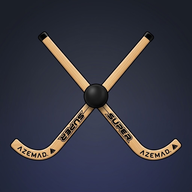
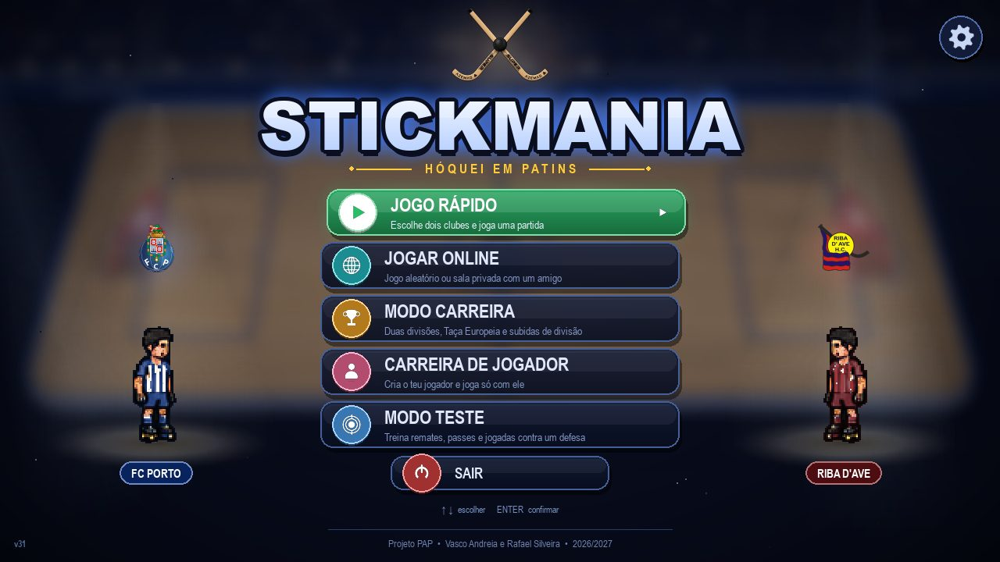
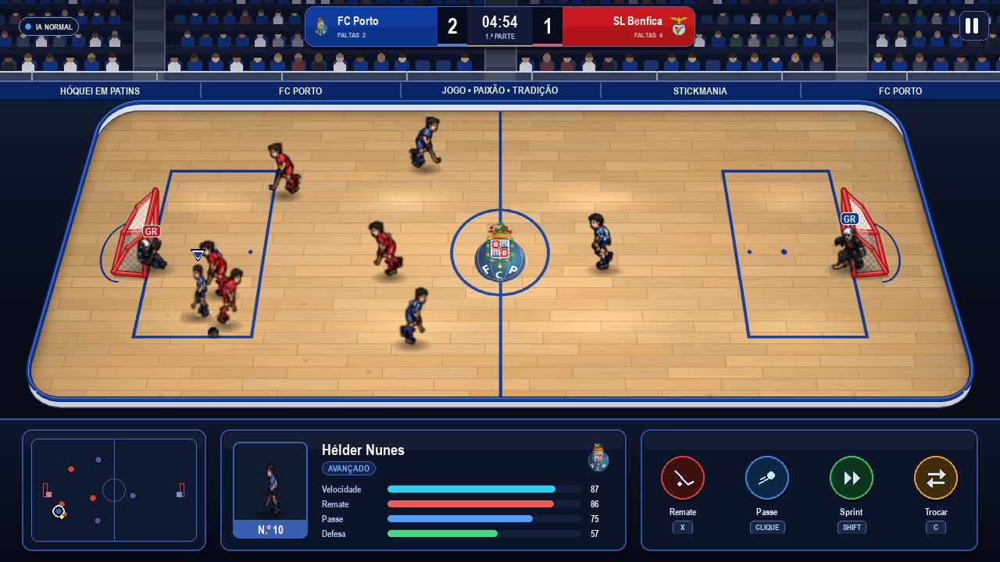
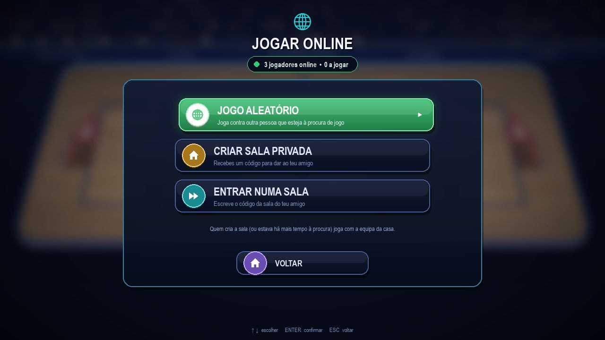
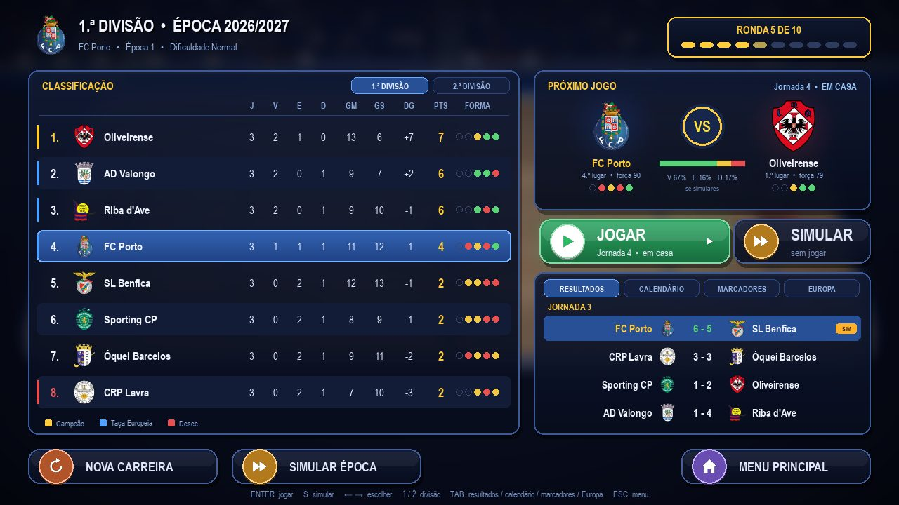
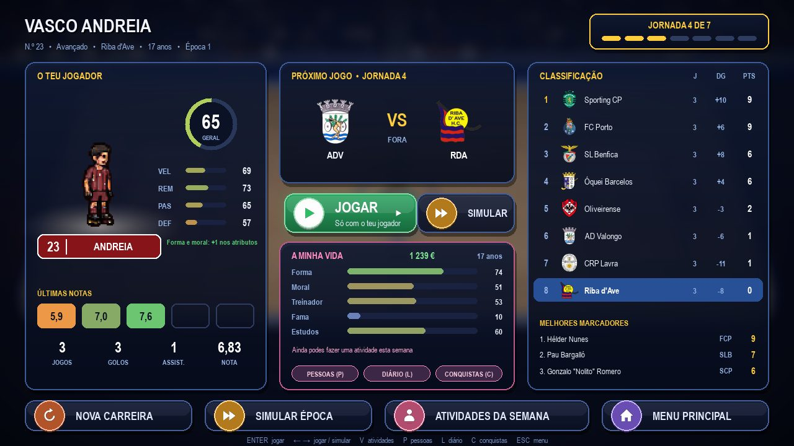
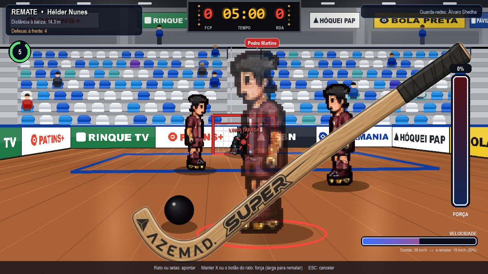
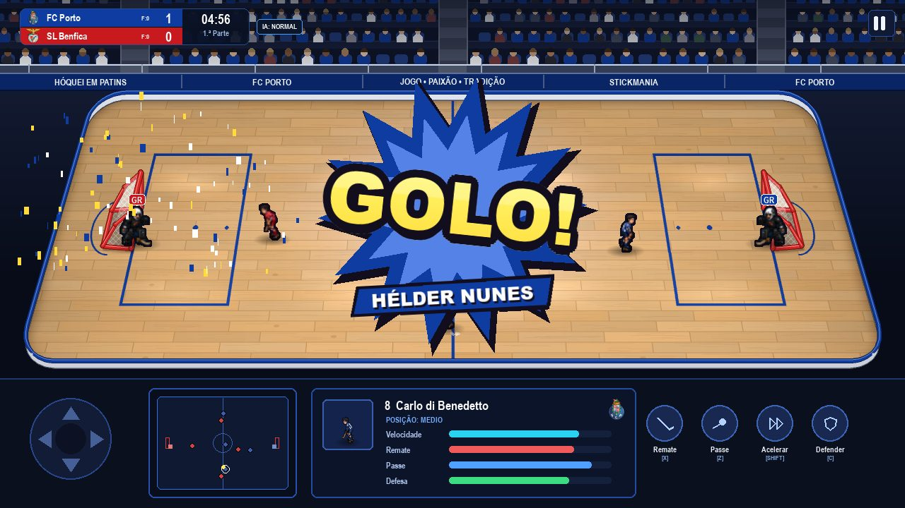
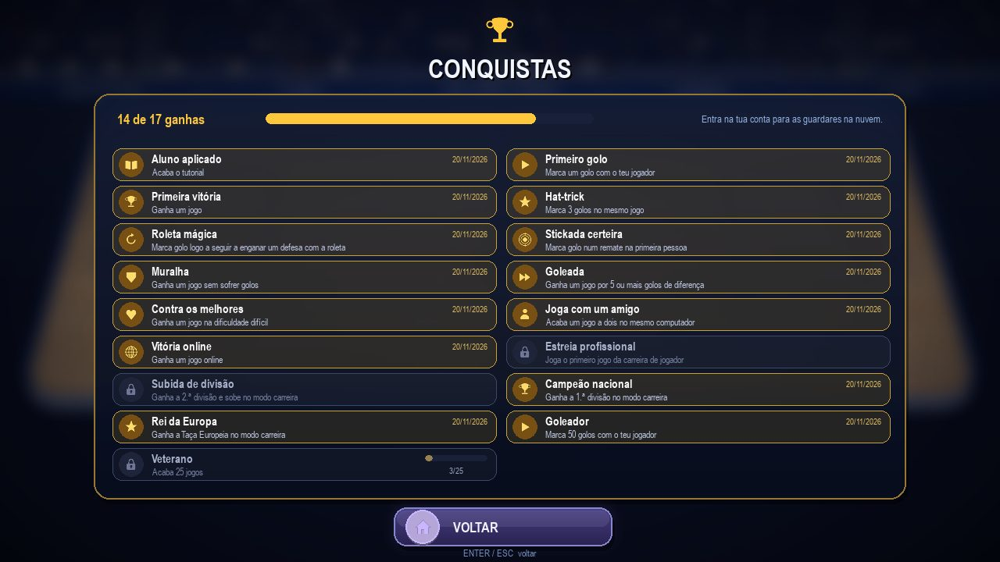

Um jogo de hóquei em patins para PC. Joga uma partida rápida, desafia um amigo online, leva o teu clube ao título ou cria o teu próprio jogador.
Descarregar grátis
Quatro jogadores de campo e um guarda-redes por equipa, com faltas, cartões, livres diretos, penáltis e fintas. Com uma conta grátis (só alcunha e palavra-passe), as carreiras ficam guardadas na nuvem e os jogos online contam para o ranking.

Escolhe dois clubes e joga contra o computador ou contra um amigo no mesmo PC.

Joga contra alguém aleatório ou cria uma sala privada com um código para um amigo.

Duas divisões, subidas e descidas e uma Taça Europeia por eliminatórias.

Cria o teu jogador, joga só com ele e decide o que acontece na vida dele fora do ringue.

Remata na primeira pessoa: apontas, carregas a força e tentas enganar o guarda-redes.

Festa a cada golo e o lance outra vez em câmara lenta, como na televisão.

17 medalhas para ganhar, do primeiro golo à Taça Europeia. Com conta, ficam guardadas na nuvem.
Não precisas de Python nem de permissões de administrador. Na primeira vez, o jogo propõe um tutorial com 8 missões curtas.
O aviso do Windows aparece porque o jogo é um projeto escolar e não tem assinatura digital paga. Para desinstalar vai a Definições → Aplicações instaladas. Os teus jogos gravados não se perdem quando instalas uma versão nova.
Também dá para jogar com comando (Xbox, PlayStation e outros).